Профиль персонажа
36 снимков локального форума: этапы проверки анкеты, повышение характеристик, изучение навыка и владения. Обновлено 28 октября 2026. Временная учебная копия удалена, исходные анкета и черновик сохранены.
Непринятая анкета в профиле
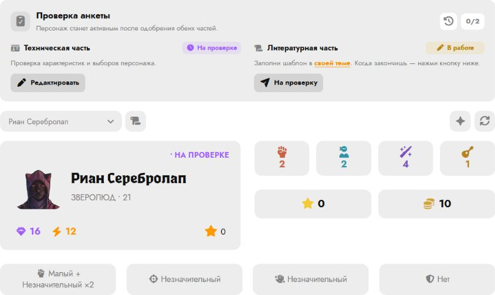
Светлая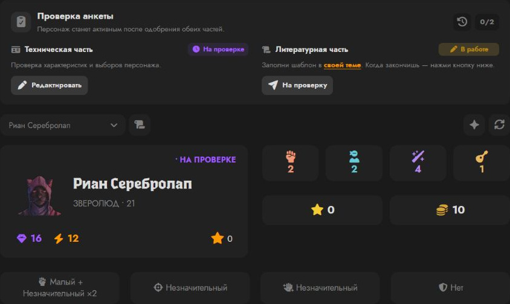
ТёмнаяХудожественная часть: в работе
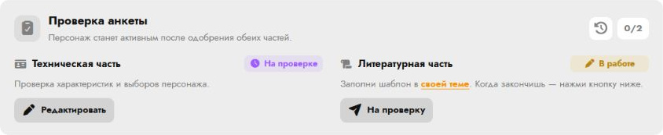
Светлая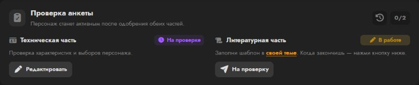
ТёмнаяХудожественная часть: на проверке
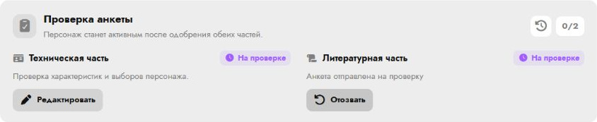
Светлая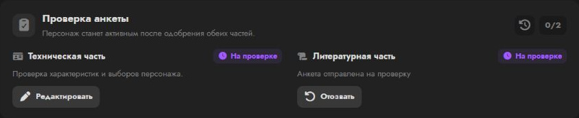
ТёмнаяХудожественная часть одобрена, техническая — на проверке
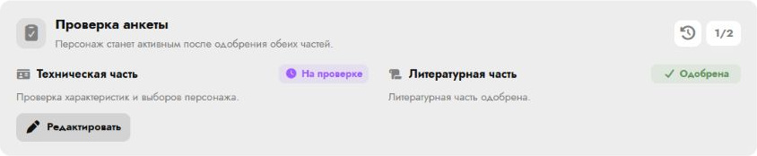
Светлая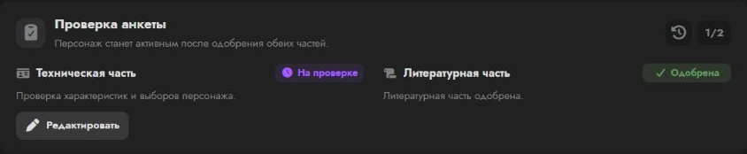
ТёмнаяОбе части приняты: персонаж активен
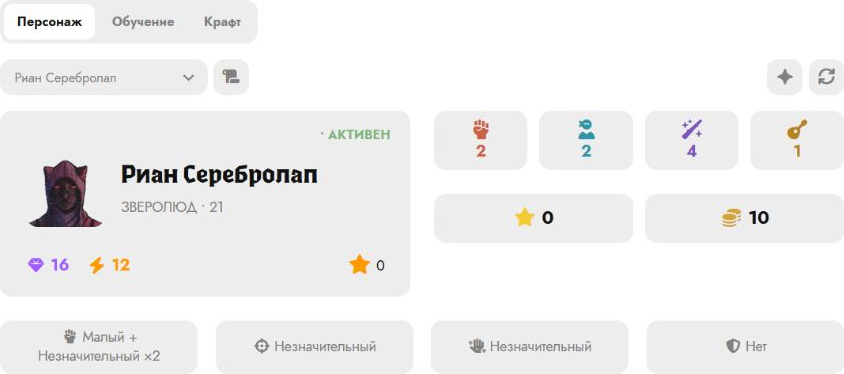
Светлая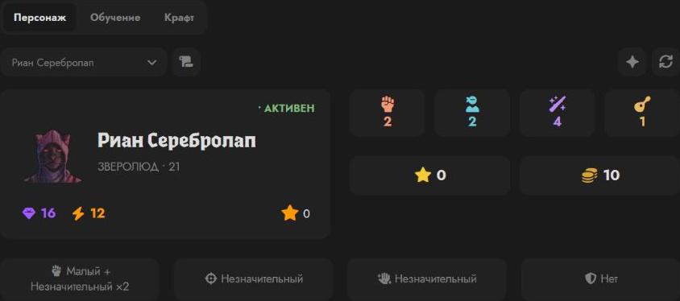
ТёмнаяВыбор характеристики и стоимость повышения
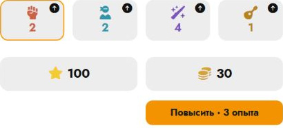
Светлая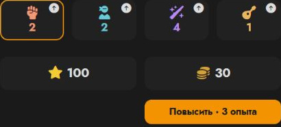
ТёмнаяРезультат одного повышения: Физиология 2 → 3
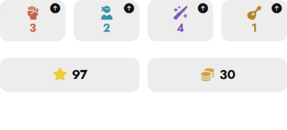
Светлая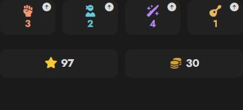
ТёмнаяВыбор нового навыка и кнопка изучения
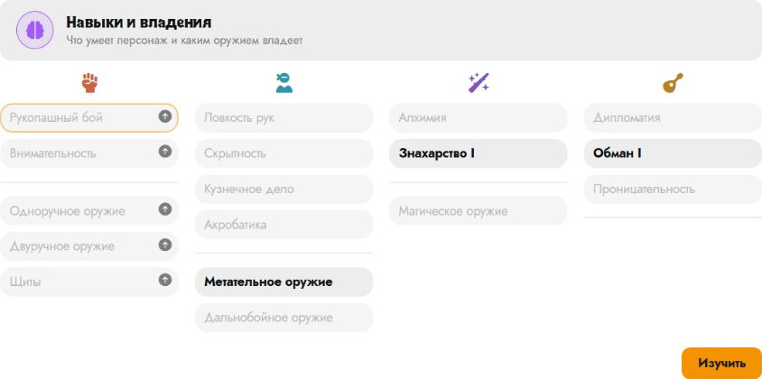
Светлая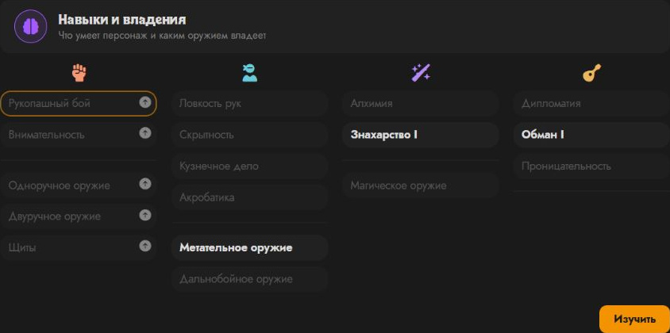
ТёмнаяИзученный навык I уровня
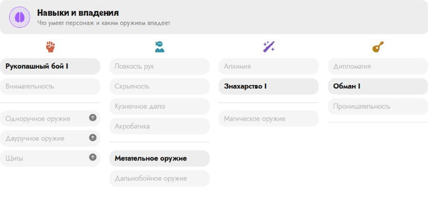
Светлая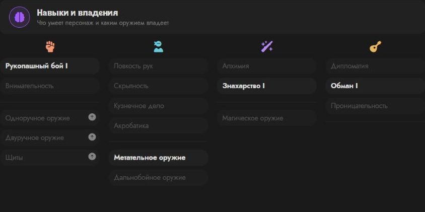
ТёмнаяВыбор нового владения и кнопка изучения
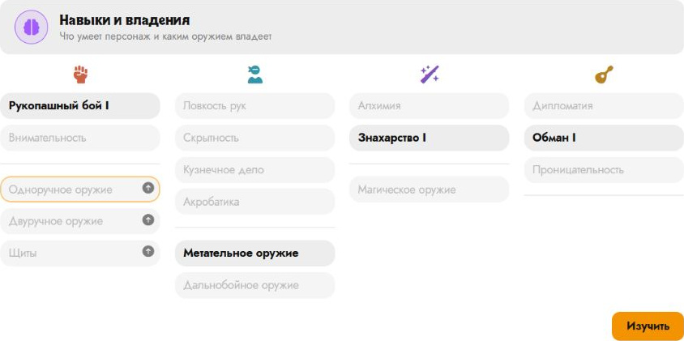
Светлая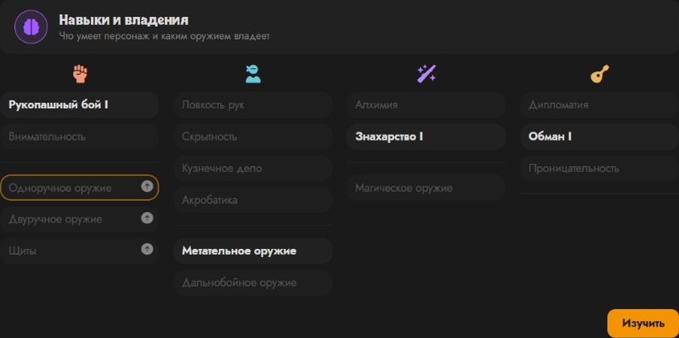
ТёмнаяИзученное владение оружием
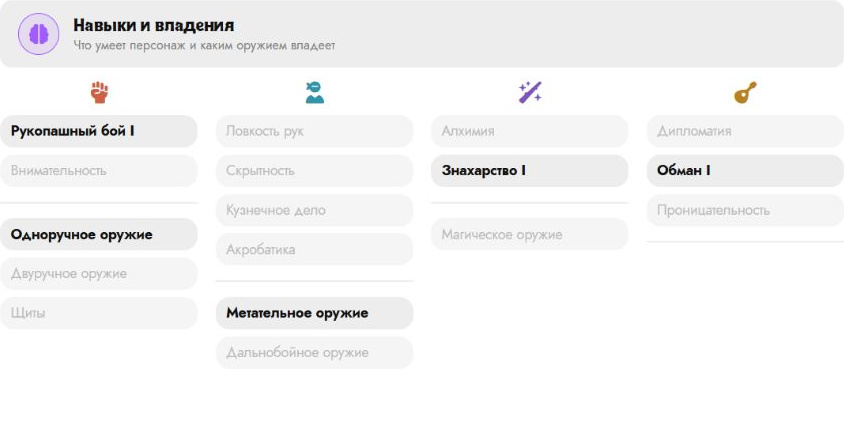
Светлая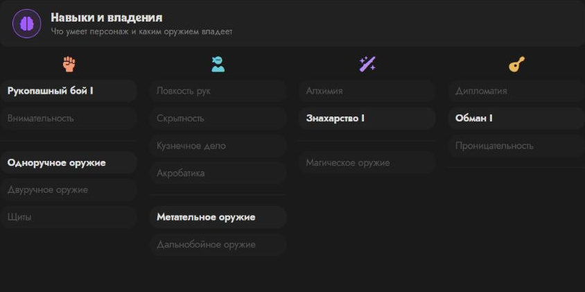
ТёмнаяКнопки создания персонажа и путеводителя
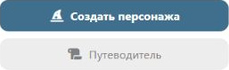
Светлая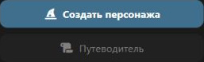
ТёмнаяПерки персонажа
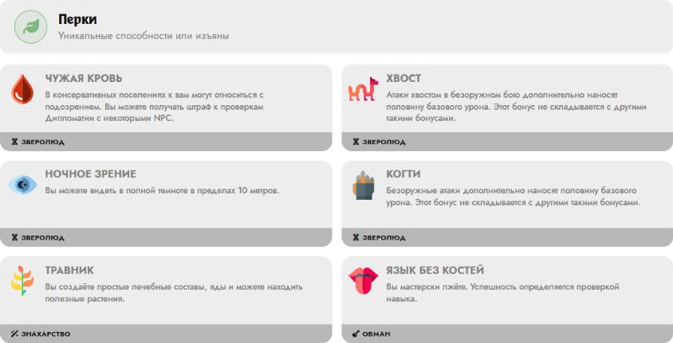
Светлая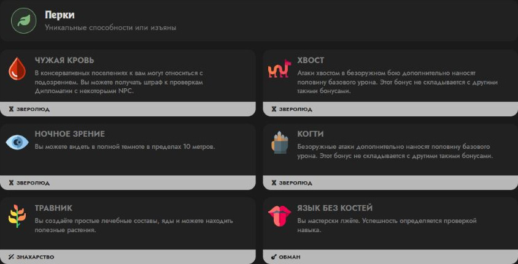
ТёмнаяЗаклинания персонажа
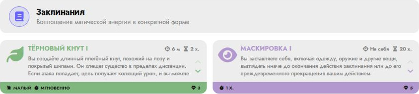
Светлая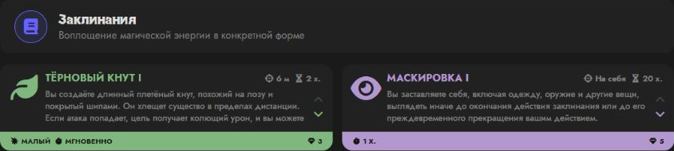
ТёмнаяИнвентарь и экипировка
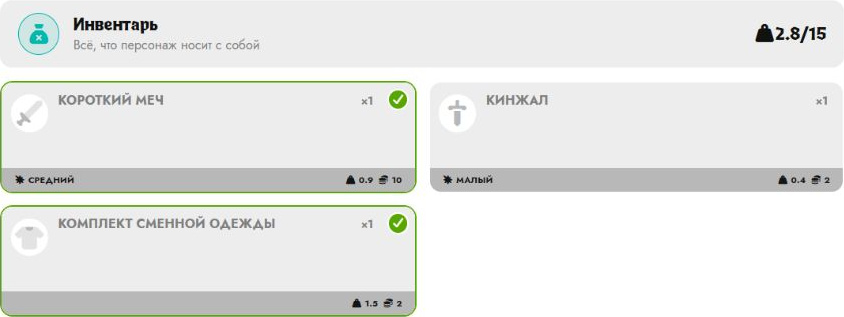
Светлая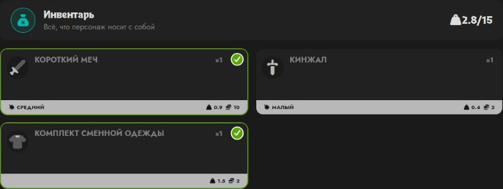
ТёмнаяЭффекты персонажа
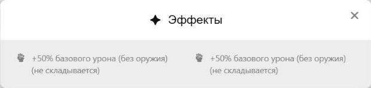
Светлая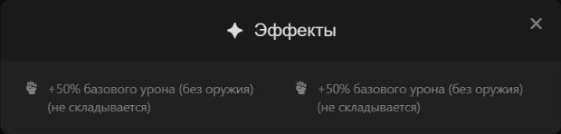
ТёмнаяИстория изменений персонажа
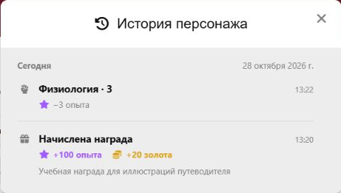
Светлая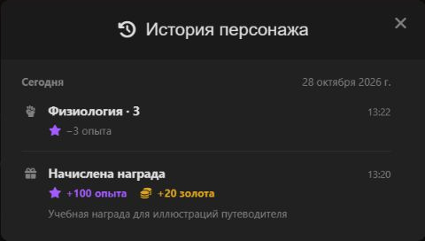
ТёмнаяНадетые предметы в блоке экипировки анкеты
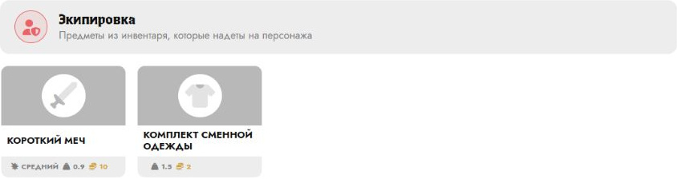
Светлая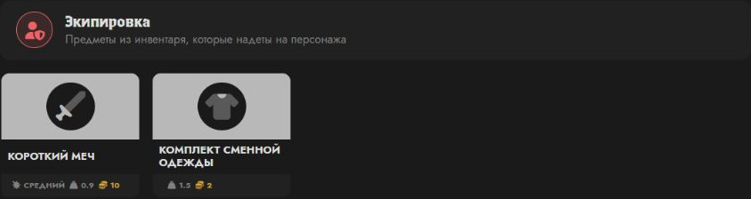
Тёмная